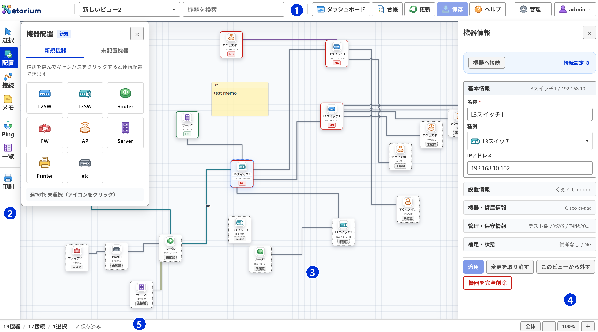

利用ガイド
Netarium（ネタリウム）は、庁内や組織内のネットワーク構成（論理構成図およびフロア物理配置図）の可視化、機器台帳の管理、および疎通確認（Ping）を集約して行うシステムです。
はじめて使うとき
編集・登録・Pingの実行は管理者の操作です。閲覧者は保存済みの構成・台帳・Ping結果の閲覧と印刷を利用できます。
- 上部バーで作業対象のビューを選びます（必要なら「管理」→「ビュー管理」で登録します）。
- 左パレットで「配置」を選び、機器種別を選んでキャンバスをクリックして機器を配置します。
- 「接続」を選び、機器同士をクリックして接続線を作成します。
- 機器をクリックして右パネルで名称やIPアドレスを入力し、「適用」を押すと自動保存されます。
- 上部「台帳」で登録機器の一覧確認、絞り込み、一括編集、Ping疎通確認を行えます。
1. 画面構成と各領域の役割


| 領域 | 名称 | 役割と主な機能 |
|---|---|---|
| ① | 上部バー | ビュー切り替え・リンクコピー、機器検索、ダッシュボード、台帳、再読込、保存状態、ヘルプ、管理メニュー、ユーザーメニュー。 |
| ② | 左作業パレット | 作業モード切り替え（選択・配置・接続・メモ）、Ping実行、ビュー内一覧（機器／接続）、印刷。 |
| ③ | 中央Canvas | 構成図・物理図面・ラックビューの描画と直接操作。ドラッグでパン、ホイールで拡大縮小、機器の移動・ダブルクリックで個票表示。 |
| ④ | 右プロパティパネル | 選択中の機器や接続の詳細情報。基本情報・設置・保守情報の確認・編集、接続情報、管理接続（HTTP/SSH）。「適用」で確定。 |
| ⑤ | 下部ステータスバー | 機器件数・接続件数・選択件数、保存状態表示、およびズーム操作ボタン（全体表示、縮小、100%復帰、拡大）。 |
2. 機能別利用ガイド
目的の操作に応じた各機能別ガイドを参照してください。
3. 操作索引・アンカー案内
各機能の詳細項目へ直接ジャンプできる索引です。旧リンク（ブックマークや外部資料）からも自動的に各ページへ案内されます。
| 機能区分 | 操作項目 | 直接リンク |
|---|---|---|
| 構成図 (`help-canvas.html`) | キャンバス表示・倍率変更 | キャンバスの表示と基本操作 |
| 接続作成・削除・系統設定 | 接続の作成と削除 / 接続系統の管理 | |
| 共有リンク・ビュー内一覧 | リンクの共有 / ビュー内一覧と一括設定 | |
| 接続線の経路調整・交差見分け | 接続の経路調整 / 重なりと交差の見分け方 | |
| キャンバスメモ・印刷 | キャンバスメモ / 構成図の印刷・PDF出力 | |
| 機器・台帳 (`help-devices.html`) | 機器情報・個票シート・複数IP | 機器情報の編集と登録画像 / 機器個票の編集と複数IP |
| 管理接続（HTTP/SSH） | 機器への管理接続 | |
| 台帳表示・列操作・Config保管 | 機器台帳とダッシュボード / 機器Configの手動保管 / 台帳の表示項目とセル操作 | |
| IPアドレス管理（ネットワーク区分） | IPアドレス管理（ネットワーク区分） | |
| 変更履歴の確認・差分表示 | 変更履歴の確認 | |
| 複数条件絞り込み・保守期限 | 台帳の複数条件絞り込み / 保守期限の見通し | |
| Ping疎通確認・一括編集 | チェックした機器のPing / 機器の一括編集 | ビュー・ラック (`help-views.html`) | ビュー切り替え・図面下絵調整 | ビューの管理と切り替え / フロア図面（下絵画像） |
| ラックビュー・機器搭載・棚板 | ラックビューと棚板 | |
| 保存・管理 (`help-admin.html`) | 自動保存と競合対処 | 変更の保存と競合への対処 |
| CSV・バックアップ使い分け | CSVとバックアップZIPの使い分け | |
| 利用者管理・初回パスワード | 利用者管理とパスワード / 初回パスワード変更 |